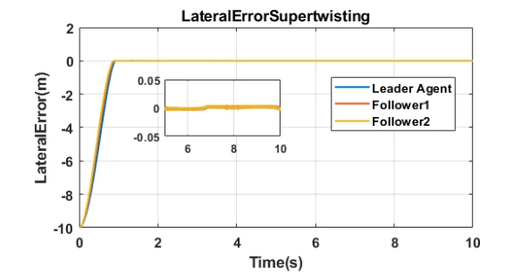
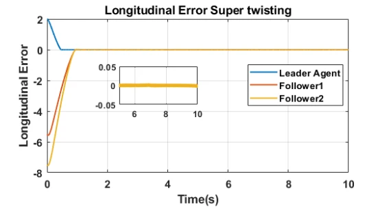

Master's thesis · Nonlinear control
Robust control for vehicle platooning
Compared robust spacing and path tracking controllers for a simulated leader and two follower vehicles.

Problem & goal
A vehicle platoon must preserve longitudinal spacing and follow the leader’s path without excessive control effort. My master’s thesis compared nonlinear controllers on a three vehicle simulation to examine tracking, convergence and actuation cost.
Approach & implementation
- System model. Modeled the platoon with nonlinear bicycle dynamics in MATLAB/Simulink at a reference speed of 8 m/s. Used a Luenberger observer to estimate yaw rate from lateral velocity.
- Controller comparison. Implemented PID, conventional sliding mode, the thesis’s power rate exponential reaching law (PREL), and second order super twisting for longitudinal and lateral control.
- Evaluation. Compared absolute, squared and time weighted tracking errors together with control effort, so lower tracking error could be assessed alongside actuation demand.
Implementation & results
PREL had the lowest error indices in the documented simulations. Super twisting gave lateral convergence without overshoot and the lowest longitudinal control energy metric. Related work appeared at ACODS 2022.
A closer look


Read more
Figures and controller comparisons are from the master’s thesis.